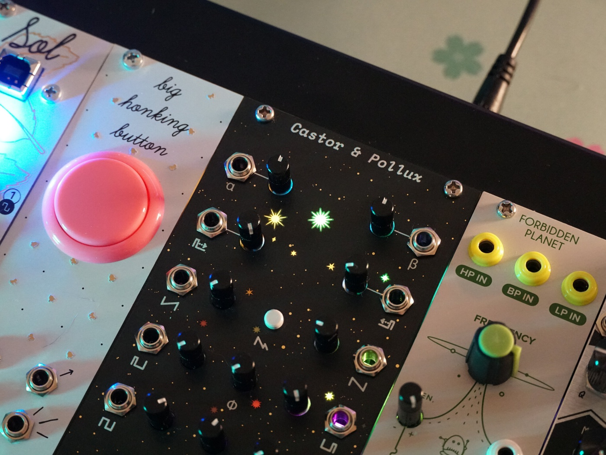
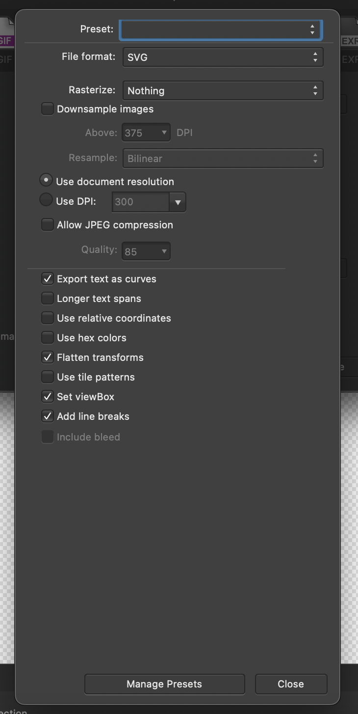

About Gingerbread
Gingerbread is a tool that helps convert artistic printed circuit board (PCB) designs from vector art programs such as Affinity Designer or Adobe Illustrator into KiCAD files.
Gingerbread is useful for creating things such as #badgelife boards and faceplates / front panels, like this one:
Using Gingerbread
At the moment, Gingerbread is intended to work with SVGs created in Affinity Designer. You'll need to make sure your design matches what Gingerbread expects.
Page settings
First, it's highly recommended to change your page settings to use millimeters and 2540 DPI, as shown here:
You might be wondering why that specific DPI? Well, 2540 DPI happens to be 1000 dots per mm, which helpfully avoids rounding issues when exporting the design from Affinity and when converting the outline and drills. You can use other DPIs by changing the DPI setting in Gingerbread once your design is loaded.
Creating an outline
The outline should be drawn on a layer named Edge.Cuts in Affinity. Gingerbread handles this layer in a specific way to make sure that there is a 1-to-1 match between the size and units in Affinity and KiCAD. This approach can't handle as many complex edge cases as the rasterization approach used by the graphic layers, but as long as your paths have been converted to curves it should handle them well. The outline layer can contain multiple curves, with inside curves getting converted to "cut-outs".
Graphics layers
Non-transparent areas on layers named F.SilkS, B.SilkS, F.Cu, and B.Cu in Affinity are converted to their respective layers in KiCAD. Note that F.Mask and B.Mask are "inverted" like they are in KiCAD, meaning that non-transparent areas indicate where to remove the soldermask- the preview in Gingerbread will shows the mask layers as they would appear on the printed board.
Gingerbread converts these layers by rasterizing all the items on each layer to black and white, re-tracing the raster image to polygons, and placing the resulting polygons into KiCAD. While this might seem odd, it works extremely well for a variety of SVGs.
Drills
Items on the layer named Drills in Affinity are also handled in a specific way. Gingerbread walks through all of the shapes in that layer and converts only circles into corresponding non-plated through hole drills in KiCAD. Just as with the board outline, this is done to preserve position and size between Affinity and KiCAD.
Exporting your design
When exporting you design to an SVG for Gingerbread, click the More button and setup the export parameters as shown below so that "Rasterize" is set to "Nothing", "Export text as curves" is checked, and "Flatten transforms" is checked.
You can save this as a preset to avoid having to change these every time you export.
Converting your design
Once the SVG is exported, drag and drop it onto the Gingerbread web page. Once loaded, you should see a preview of your design. Use the options in the right pane to configure the KiCAD output and validate the preview. Once you're ready, click the "Convert" button and your design will be copied to your clipboard, ready to paste directly into KiCAD's PCBNew.